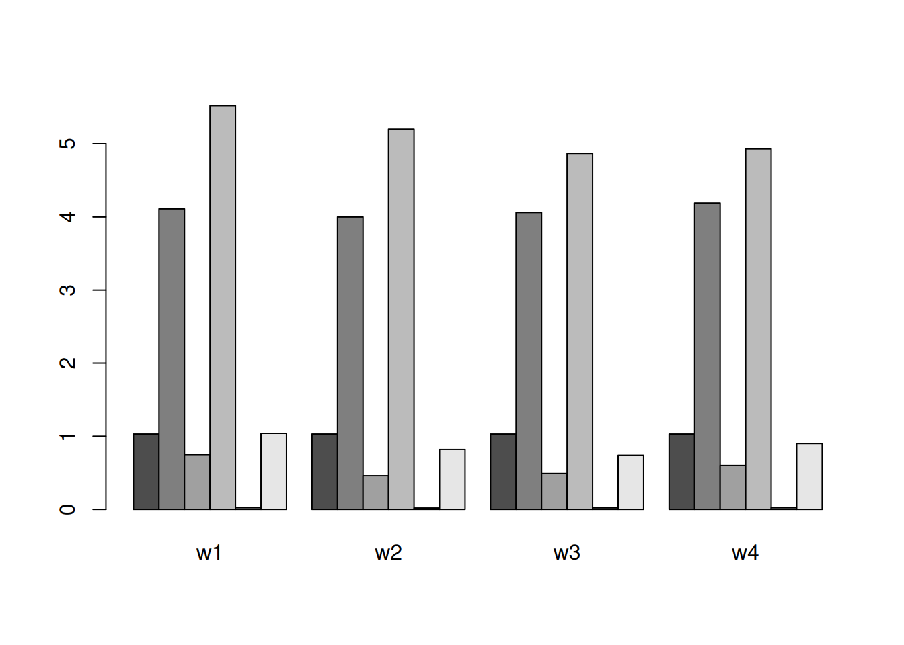

20 Fruktvin
20.1 Principer
Most yeast strains can tolerate an alcohol concentration of 10–15% before being killed.
Sockerhalt vid start och slutjäsning
“Normally you would want a starting specific gravity between 1.070 and 1.100 for wine.”
Sockerhalten vid start bör vara SG 1.070 till SG 1100 (ABV 10-15%). Kan således vara lämpligt att sikta på 1090.
Slutlig SG efter färdigjäsning kan vara 0.990-1.000. Det betyder att buteljering vid 1.000 riskerar att ge flaskbomber eller i alla fall en överdrivet bubblig dryck. Därför rekommenderas slutjäsningstest.
“Start Gravity should be 1.070 (normal finished ABV will be 10.5%) to 1.090(normal finished ABV will be 13%). Finish Gravity should be 0.990 (for dry wines) to 1.005 (for sweet wines). Normally you would want a starting specific gravity between 1.070 and 1.100 for wine. Just try to keep your wine’s starting specific gravity above 1.075. 1.09x is a good place to start, I shoot for 1.092 to 1.094” aim for 90-100? FG: 1.0000-0.996. 0.990?
Önskas ett sött vin kan tillräckligt med socker tillsättas så att socker finns kvar när jästen hämmas av alkoholhalten. De flesta jästsorter klarar alkoholhalt upp till 10-15%. Således kan man beräkna mängden socker som behövs för att uppnå 15% alkohol (SG 1.100-1.110 beroende på om man räknar med slutlig SG 0.99-1), torrjäsa drycken, och sedan tillsätta socker för sötning.
20.2 Fruktvin från olika bär
20.3 Fläderbär
Hög halt tanniner. Ger rödvinsliknande dryck. Vinner på lång lagring (minst 1 år).
Säkerhet: Ffa stjälken och i viss mån gröna bär innehåller cyanid. Bör därför tas bort. Vissa rekommenderar att sedan koka bären (långsamt 20 min) för att ta bort cyaniden, men oklart om det behövs.
Krossning: Kan vara svårt att krossa små bär?
Ev köld-maceration?
En del häller het socker-vattenlösning över bären
Om bären/skalen får vara med i början av jäsningen ökar sannolikt tanninhalten (tex 2v)
“When too few berries are used, the wine is thin and unlikely to improve. When too many berries are used, the tannins and other flavor constituents may overpower the palate and require dilution, blending or prolonged aging to mellow. Between these extremes are wines that often offer exceptional enjoyment. These wines accept oak well and small amounts (3–7%) blended into lesser grape wines often improves them considerably.” https://winemakermag.com/article/841-elderberry-wine [Bra sida]
“The composition of elderberries is complex. They contain 7.5% sugars, mostly sucrose, glucose and fructose. Citric acid is the most abundant acid, but they also contain malic, shikimic and fumaric acids. They also contain 3% tannins, at least three flavonoid glycosides and several anthocyanin glycosides and diglycosides. Elderberries exhibit up to 34 identified aroma compounds. The berries are rich in vitamin C, and contain lots of anthocyanins, which are antioxidants. They are also a good source of vitamins B1, B2 and B6 and contain the anti-inflammatory agents ursolic and oleanolic acids.”
some but not all elderberries may emit a greenish substance during fermentation. This goo coats the walls of your primary vessel and defies conventional clean-up strategies. It is referred to by various unkind names, but “elderberry goo” or “gunk” a The goo cannot be cleaned with water or soap or cleansers or solvents or spirits. However, it is easily cut with vegetable oil and cleanly wiped from the primary. The oil is then washed away with a liquid soap containing a degreaser. Rinse well and then sanitize with sulfite solution.
As the fruit matures, it begins to droop, and when inverted they are absolutely ready to harvest. However, you may have to harvest a bit earlier if you don’t have the plants netted and birds begin claiming the crop.
Uppvärmning til 82C för att bli av med cyaniden?
Observationer Fläderbär: Gröna: Små, omogna. Sållas bort av vatten (flyter) Rödgröna: Större. Syrliga. Sjunker Vinröda: Något syrliga, ganska goda. Svarta: Låg syra, låg beska. Russin: Sjunker. Ingen smak alls. Några är mer övermogna och har antydan av dålig smak.
Obs innehåller citrat, så risk för acetifiering vid MLF? Svavla?
Plockning
SÄKERHET
Tänk på att skilja äkta från falsk fläder. Den falska flädern har röda bär och är giftig.
Äkta fläder innehåller cyanid (cyanogena glykosider), främst i bladen, stjälkarna och i viss mån i omogna (gröna) bär. Dessa kan ge magsmärtor, illamående, och kräkningar. Nivåerna även i omogna bär är dock låga och orsakar troligen inga besvär om de konsumeras [cite: 1]. Det är alltså starkt rekommenderat att plocka bort stjälkar och blad. Som försiktighetsåtgärd kan man även rensa bort gröna bär. Vill man vara ännu försiktigare kan man värma upp musten något, och eftersom eventuell cyanid är flyktigt försvinner det då.
“Cyanide is very volatile (evaporates at slightly above room temperature)” Cyanogenic Glycoside Analysis in American Elderberry: “Concentration levels in all tissues were generally low and at a level that poses no threat to consumers of fresh and processed AE products.”
Plocka bären när de är ordentligt mogna. Bären på ett träd mognar vid olika tillfällen, och kan variera både mellan klasar och inom klasar (beroende på när de blommat). En strategi kan vara att lämna klasar som har omogna bär i sig. Övermogna bör blir russinlika, men smakar ingenting så kan tas med.
Frysning av bärklasarna gör det enkelt att sedan lossa bären från dem. Särskilt om du plockar fläderbär då och då kan det vara smart att samla klasarna i påsar i frysen. När du samlat tillräckligt, gnugga klasarna initi påsarna så lossnar de flesta av bären. Rensa sedan bort stammarna noggrannt.
Recept fläderbärsvin
Mitt recept:
- 1 kg bär
- 1 kg vatten (1-2.3 kg i olika recept)
- Socker 300-450 g per liter vatten (?). 450 g/L vatten (SG 150) torde ge SG kring 90 när det blandas med lika del must.
- Pektolas (valfritt)
- Jäst som klarar hög socker/alkoholhalt
- Jästnäring. Kanske inte behövs. Vid test jäste musten från SG 100 till 0 på några dagar i 15C och aktiviteten fortsatte.
- SO2 40 ppm (valfritt men kan vara bra för att hindra MLF)
- Syratillskott (vinsyra, äppelsyra, citronsyra?). Valfritt men pH vid test var 3.8 så syratillskott kan vara lämpligt. Citronsyra kan ge acetifiering vid MLF men finns redan i fläderbär.
Gör såhär:
- Krossa. Funkade bra att krama sönder med händerna.
- Enl vissa recept värms bären/musten. Uppvärming till tex 63C i 20 min ger sannolikt pastöriseringseffekt om det önskas. Uppvärmning kan ge bättre extraktion av färgämnen och minska örttoner (gröna smaker). Det tycks också minska volatila syror något. Därutöver tar det bort eventuell cyanid och underlättar mustningen. Ett alternativ kan vara att koka upp vattnet och hälla över bären.
- Tillsätt vatten och socker.
- Pektolas
- Svavla med 40-50 ppm SO2. Vänta sedan minst 24h utan lock men med duk över för att svavlet skall dunsta
- Tillsätt jäst som rehydrerats enl förpackningen
- Tillsätt ev Jästnäring
- Rör om dagligen. Alternativt använd nätpåse som sänks i musten.
- Efter 1v (3-14d i olika recpt) sila bort bären. Låt massan droppa av men pressa ej (varför?). Massan kan omjäsas till en ripasso.
- Tappa om, fyll upp, ev svavling?, sätt på jäsrör
- Färdigjäs till SG xx
- Mogna 3-4 mån i mörkt utrymme (bevarar färgen)
- Buteljera, eventuellt med tillsatt svavel tex 20 ppm.
- Flaskmogna minst ett år i mörkt utrymme
FLÄDERBÄRSVIN RECEPT 2
1.5 kg rensade bär 1 kg socker (Alt sikta på SG 100) 3.5L vatten 2 tsk acid blend 1 tsk jästnäring 1/2 tsk pektolas SO2 Vinjäst som klarar hög socker/alkoholhalt
Variant:
https://homebrewanswers.com/elderberry-wine-recipe/
Noter
Vilken jäst: https://www.winemakingtalk.com/threads/which-yeast-for-elderberry.45889/
Enl visaa recept Maceration (“cold soaking”) med pektolas och SO2. Lagring: Ek?
enl vissa sockerlag kokas och hällas över bären. Låt då svalna innan jästen tillsätts.
Justering: Brix mål 25 (21-27)
Bär vatten 1:2.3 - 1:0.6 så ratio 1 kg bär och 0.5 till 2 kg vatten verkar rimligt. Kan vara bra att spara en del av vattenmängden för att tillsätta resterna?
5 kg bär + 3L vatten Rör om dagligen alt använd nätpåse som sänks? Omtappa efter 1-2 veckor, låt då resterna droppa ur men pressa ej. Lagra >1å
Upp till 4.5 kg vatten (2 kg i något recept, 0.6 i något, dvs range adderat vatten 60-200% av bärens vikt. Någon nämner att fläderbär har mycket smak och anger 1-3 L vatten per kg bär. Vill man ha vinet för blandning kanske bättre att ha kraftigare vin? Skall man ompressa och lägga ihop se till att den första inte blir för tunn? Att toppa med sockervatten vid första omtappningen är ju också en fördel att kunna göra. Därför troligen lämpligt att ta en liten eller måttlig spädning i början.)
Hur mycket socker? 1 kg socker (i något recept 0.5 kg socker, i ett annat 0.6), beror på hur mkt vatten man har i. 1 kg var till 4.5 kg vatten per kg bär?
[1] 95[1] 450Testat:
Not 2024: XIII: Fläderbär, mosade 4 L. Vatten ca 3L. Sötades till SG 100. Restsatsen efter omtappning dag 4 (13 okt) blev ca 2.5 L bär och 1.5L saft, dvs ungefär ursprungliga volymen bärmos. + 1L sockervatten med SG 80. Jäste snabbt på 4 dagar till sg 0 med fortsatt aktivitet.
Artiklar
“To the best of our knowledge, only three articles on elderberry wine have been published so far. Schmitzer et al. (2010) focused on chemical composition, some individual phenolic compounds and antioxidant activity. On the other hand, in the work of Rupasinghe and Clegg (2007), elderberry wine was analyzed for total phenolic compound content, antioxidant activity and elemental analysis, while Elez Garofulić et al. (2012) carried out analyzes of the total phenolic content and sensory properties.” [cite: 2]
“Techniques in Home Winemaking by Pembranchi is authoritative, but hits like a college level textbook and is organized as such rather than in a technique-application-recipe format, so you kinda have to have a specific technical query in mind to pick through it.”
20.4 Rönnbär
The Chemical Composition of Rowanberries (dried): https://www.ncbi.nlm.nih.gov/pmc/articles/PMC10536293/ Compositional diversity in fruits of rowanberry (Sorbus aucuparia L.) genotypes originating from seeds [cite: 3]
Se även:
MIKULIC-PETKOVSEK, M., J., SAMOTICHA, K., ELER, F., STAMPAR, R., VEBERIC (2015): Traditional elderflower beverages: a rich source of phenolic compounds with high antioxidant activity. J. Agric. Food Chem., 63(5):1477-1487.
MIKULIC-PETKOVSEK, M., B., KRSKA, B., KIPROVSKI, R., VEBERIC (2017): Bioactive components and antioxidant capacity of fruits from nine Sorbus genotypes. J. Food Sci., 82:647-658. [cite: 4]
| parameter | unit | mdn | min | max |
|---|---|---|---|---|
| Malic | g/100g | 21.0 | 17.51 | 26.22 |
| Citric | g/100g | 4.6 | 2.25 | 7.15 |
| Tartaric | g/100g | 1.6 | 1.15 | 2.04 |
| Glucose | g/100g | 39.0 | 36.11 | 48.45 |
| Fructose | g/100g | 32.0 | 25.82 | 39.56 |
| Sorbitol | g/100g | 23.0 | 18.25 | 27.18 |
| Sucrose | g/100g | 2.0 | 1.04 | 2.87 |
| Vitamin C | mg/100g | 32.0 | 25.60 | 40.20 |
| Total phenolic content | GAE/100g | 150.0 | 123.00 | 189.00 |
| Total anthocyanin | mg/100g | 29.0 | 18.00 | 57.00 |
| FRAP | mM TE/100g | 5.0 | 3.36 | 6.92 |
[1] 0.0015Recept rönnbärsvin
RÖNNBÄRSVIN
Källa: Modifierat från [5].
- 1 kg rönnbär, krossas/mixas
- 1.5 kg vatten (möjligen mindre för att undvika att den blir tunn??)
- 0.2 kg socker (behövde sötas med ca 120 g/L för att nå SG [100?]). Ev koka sockerlag av vatten + socker.
- 1 citron (zest + juice), alt tartrat 1g/L??, Beräkna 1/2 tsk vinsyra per kg bär eller liter saft. 1 g vinsyra motsvarar 1 krm. Används för att justera syran i viner på frukt och bär. 10 gram per 10 liter vin höjer syranivån med 1 gram per liter
- Pektolas
- Jästnäring
- Jäst
- SO2 (valfritt). Vänta då 24h innan jästen tillsätts.
Tag 1 kg vatten för att ha utrymme att späda senare om sockernivån blir för hög?
Rör om dagligen i 1 vecka. Omtappa sedan. Sila av moset?
Omtappa var 4:e månad tills färdigjäst.
Lagra > 1å
Not: Blev mycket bärmassa som flöt upp efter 3 dagar, svårt att omtappa. Så troligen bra att ha viss mängd vatten och blanda om regelbundet snarare än omtappa för tidigt. Jäsningen hade ej heller startat. Kanske jästen fångats i pektinet som flöt upp med bären??
20.5 Plommon
Kan sakna fyllighet, så ibland görs det med russsin tillsatt, men det behövs troligen ej om stor andel plommin används.
Kan ta lång tid att klarna. Använd dubbel dos pektolas? Omtappa x flera.
Mogna 6 månader och smaka, därefter ev 6 månader till eller upp till flera år.
För ett sött vin kan mer socker användas och hälften tillsätts då efter ca 30 dagars jäsning.
- 1 kg plommon
- 0.25 kg vatten
- 0.25 kg socker (600g eller mer om sött vin önskas)
- Pektolas
- Syra
- Tannin (russin, tanninpulver)
Gör såhär
- Tag ur kärnor och hacka frukten
- Häll över kokande vatten
- tillsätt sockret
- Låt svalna
- Tillsätt jäst, pektolas, jästnäring, tannin
- Extrahera 1v, rör dagligen.
- Omtappa varje månad tills det klarnar och sedan ytterligare en gång vid buteljering.
- Flaskmogna minst 6 månader.
20.6 Körsbär
1 kg bär 1.5 L vatten Syra, tannin, pektolas Socker
Krossa bären utan att krossa kärnorna Extrahera en till två veckor Omtappa efter ytterligare tvp veckor och därefter två gånger med två månaders mellanrum
20.7 Svartvinbär
“Black currants have a pretty tough skin and must be crushed, heated or broken down with a food processor (on lowest setting) in order to extract the very flavorful juice.” “Both raisins and bananas are used to increase body.”
1 kg bär 3-4 kg vatten 0.75 kg russin 2 kg bananer Socker Syra, tannin, pektolas Etrahera 3d Omtappa var 30:e dag Kyl 3-5d innan buteljering Lagra upp till 3å
20.8 Rabarber
Oxalat balanseras (minskas?) med Kalcium. Extrahera 3d. Köldstabilisera 30 d. Bra för blending. Kan drickas direkt.
20.9 Hagtorn
Ca 3 L något övermogna hagtornsbär plockades efter frost 241023 från grannens häck (se bilder). Bären var mjöliga, sötma 3-4, beska 2, syra 2, arom 2. Målsättningen var att bevara så mycket tanniner som möjligt för att kunna blanda med cider.
Tips: Vill man gallra bort kärnorna kan det göras när man överför mot samlingkärl till jäskärl, efersom kärnorna sjunker till botten och resten flyter.
Eget recept, improviserat:
- 1 kg hagtornsbär
- 1.5 kg vatten (troligen öka detta då det blev väldigt mycket krafs som fyllde kärlet och litet vätska under, men får prova hur stark aromen blir efter extraktion?)
- 1 dl ren etanol (valfritt, underlättar troligen extraktion av tanniner)
3L gav 2 kg rensade bär. Dessa mosades enkelt med potatisstomp. 1 kg/kg vatten tillsattes, samt 5% alkohol. Massan extraherades i mikro 500W i 12 min (vilket gav temp ca 50C). Rör om efter halva tiden. Tillsatte sedan resten av vattnet (totalt 1.5 kg/kg). Lät svalna och tillsatte sedan socker och jäst (71B). Hälldes i två st 5L glasburkar.
Extraktets egenskaper (avsilat): pH 3.7, SG 1.022 (med vatten tillsatt). Sötades till SG 92. Färgen rödorange, grumlighet 2, beska 3, strävhet 2-3, syra 2, sötma 2, arom 3 (hagtornssmak).
Adderade SO2 (150 ppm). Ev bör man ha mer för att bättre hämma laktobaciller med tanke på höga citratnivåer?
Adderade pektolas.
Not: Råkade tillsätta Lalvin 71B (innan SO2 så den kanske hämmas), men EC1118 är nog bättre då den antagligen ej reducerar malat lika mycke
20.10 Iscider
https://drive.google.com/file/d/15HFs2TvGbEf58nrCpT4OLwGyTCSbygzS/view